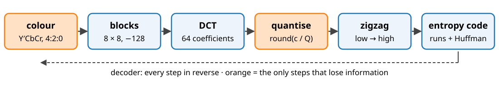
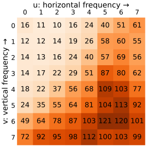
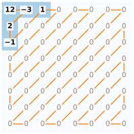
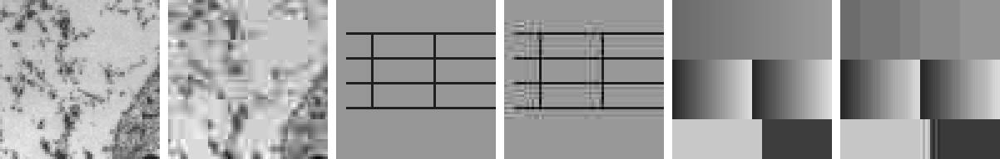
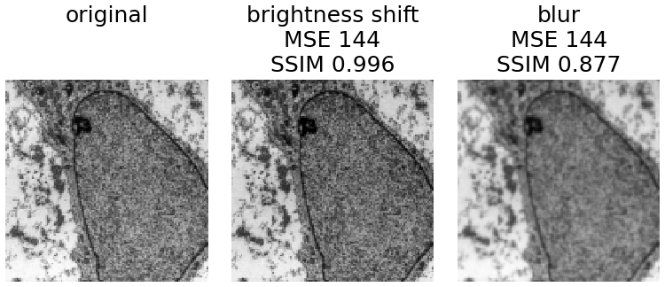

Everything from the day so far, put together: the DCT of 8 × 8 blocks, a quantisation table, zigzag order, run lengths and Huffman codes. That is baseline JPEG (1992), still the most used image format.
The pipeline step by step, and one block by hand.
The quality factor: one number that scales the table.
Measuring quality: PSNR (recall) and SSIM, and why they can disagree.
Slides titled The math give the formulas and proofs; the ideas are complete without them.
The pipeline

Colour (colour day): convert R′G′B′ to Y′CbCr (brightness and two colour differences) and halve the colour resolution in both directions (4:2:0). The eye sees colour detail poorly.
Blocks: cut each channel into 8 × 8 blocks; subtract 128 so values are centred at 0.
DCT of every block (previous unit).
Quantise, zigzag, entropy code: the next slides.
Decoding reverses every step. Only quantisation (and chroma subsampling) loses information.
Quantisation: the psychovisual redundancy as a table
Divide each coefficient by its own step Q_{uv} and round: q_{uv} = \operatorname{round}(c_{uv}/Q_{uv}). The decoder multiplies back: q_{uv} Q_{uv}.

Small steps at low frequencies (top left), large steps at high frequencies: the eye barely sees fine detail, so it gets few levels.
Most high-frequency coefficients become 0.
The error of each coefficient is at most Q_{uv}/2.
The quality factor1 \dots 100 scales the whole table: quality 50 = the table as printed, quality 25: steps × 2, quality 75: steps × ½.
Left: the standard luminance table (quality 50).
The math: the quality factor and the quantiser
Scaling (the common reference implementation): s = 5000/q for q < 50, s = 200 - 2q for q \ge 50 (percent), then Q'_{uv} = \lfloor (Q_{uv} s + 50)/100 \rfloor, at least 1 (at most 255).
q = 25: s = 200, Q'_{00} = 32; q = 75: s = 50, Q'_{00} = 8; q = 100: s = 0, all steps 1.
Uniform quantiser with step \Delta: the error c - \Delta\,\operatorname{round}(c/\Delta) lies in [-\Delta/2, \Delta/2]; for coefficients spread over many steps it is roughly uniform, with variance \Delta^2/12 (bit-depth day).
The DCT is orthonormal, so the squared pixel error of a block is the sum of the squared coefficient errors: E\|x - \hat x\|^2 \approx \sum_{uv} \min(Q_{uv}^2/12,\ \operatorname{Var} c_{uv}) (a coefficient quantised to 0 costs its own variance).
Zigzag and entropy coding
Zigzag: read the 64 quantised values diagonally from the top left. Low frequencies first, so the zeros gather at the end.
DC: coded as the difference from the previous block’s DC (prediction, lossless unit): neighbouring blocks have similar averages.
AC: each non-zero value becomes a symbol (run of zeros before it, size = number of bits of the value) + the value’s bits. The (run, size) symbols are Huffman-coded with standard tables. EOB (end of block) says “only zeros from here”.
Example: zigzag 12 −3 2 −1 0 1 0 0 … after a block with DC 9: DC difference 3; AC symbols (0,2) −3, (0,2) 2, (0,1) −1, (1,1) 1, EOB.

One block by hand
position (row, col)
(0,0)
(0,1)
(1,0)
(2,0)
(1,1)
(0,2)
others
coefficient c
190
−33
25
−15
5
9
small
step Q (quality 50)
16
11
12
14
12
10
≥ 10
q = \operatorname{round}(c/Q)
12
−3
2
−1
0
1
0
decoded qQ
192
−33
24
−14
0
10
0
Zigzag: 12, −3, 2, −1, 0, 1, then 58 zeros. Previous DC 9: DC difference 3.
Bits with the standard tables: DC 011+11 (5), (0,2) −3: 01+00 (4), (0,2) 2: 01+10 (4), (0,1) −1: 00+0 (3), (1,1) 1: 1100+1 (5), EOB 1010 (4): 25 bits for 64 pixels (512 bits raw).
Largest error: the (1,1) coefficient, 5, below Q/2 = 6.
Try it: JPEG
Rate and distortion
Rate: bits per pixel. Distortion: e.g. mean squared error. Every codec setting is a point; a rate–distortion curve joins them, and codecs are compared by their curves.
Quantising with step \Delta costs a squared error of about \Delta^2/12 per coefficient, unchanged in the image (orthonormal DCT).
Halving\Delta: a quarter of the squared error, +6 dB of PSNR, and about one more bit for each coefficient that is not zero.
Real codecs add a dead zone (a wider zero bin) so that noise-sized coefficients become 0.
So at high rates D(R) \approx c \cdot 2^{-2R} per coefficient: each extra bit buys 6 dB, for any reasonable coefficient distribution (only the constant c changes).
Reverse water-filling (rate–distortion theory, Gaussian coefficients with variances \sigma_k^2): the best code gives every coefficient the same error \theta and spends nothing on coefficients with \sigma_k^2 < \theta. A flat table is that strategy for squared error; the JPEG table deliberately departs from it, to match the eye.
Artefacts

Pairs of original | decoded (zoomed 3×): the cell at quality 10, the test card at quality 25 and at quality 10.
Blocking: every block quantised on its own; flat areas become flat 8 × 8 tiles with steps between them.
Ringing (mosquito noise): high frequencies of an edge are quantised away: ripples next to edges and lines (Gibbs, as with the Fourier unit’s low-pass).
Generation loss: recompressing after an edit or a shift of the 8 × 8 grid adds new errors each time.
Measuring quality: PSNR and SSIM
MSE and PSNR= 10 \log_{10}(\text{peak}^2/\text{MSE}) (camera noise unit, bit-depth day): the error energy, pixel by pixel. Easy, and what the transform’s Parseval property controls.
SSIM (structural similarity, Wang et al. 2004): compare two images in a small window around each pixel by
luminance: are the local means equal?
contrast: are the local standard deviations equal?
structure: are the local patterns correlated?
The product is 1 for identical windows; the SSIM map shows where structure is lost, its mean is the score.
They disagree: a brightness shift has a large MSE but keeps all structure (SSIM ≈ 1); blocking or blur with the same MSE destroys structure.

The math: SSIM
In a Gaussian window (11 \times 11, \sigma = 1.5) around each pixel, local means \mu_x, \mu_y, variances \sigma_x^2, \sigma_y^2, covariance \sigma_{xy}:
L = the dynamic range (255 for 8 bit); the constants avoid division by zero in flat regions.
It is the product of luminance \frac{2\mu_x\mu_y + C_1}{\mu_x^2 + \mu_y^2 + C_1} and contrast–structure \frac{2\sigma_{xy} + C_2}{\sigma_x^2 + \sigma_y^2 + C_2} terms; each is \le 1, with equality iff \mu_x = \mu_y (resp. y - \mu_y = x - \mu_x locally).
A constant offset y = x + d: structure term exactly 1, luminance term 1 - \frac{d^2}{\mu_x^2 + \mu_y^2 + C_1}, close to 1. MSE = d^2.
Try it: same MSE, different quality
Summary
JPEG: Y′CbCr + 4:2:0 → 8 × 8 blocks → DCT → quantise with a table scaled by the quality factor → zigzag → DC difference, (run, size) + Huffman.
Only quantisation and subsampling lose information; the error per coefficient is at most Q/2.
Rate–distortion: halving the step costs about one bit per significant coefficient and buys 6 dB.